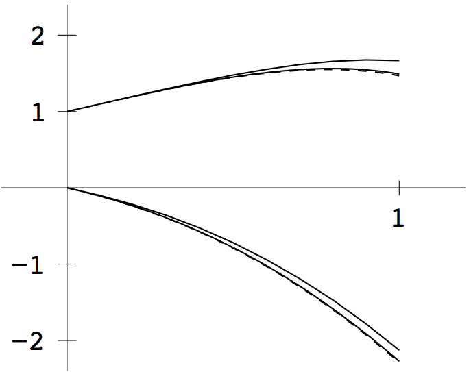
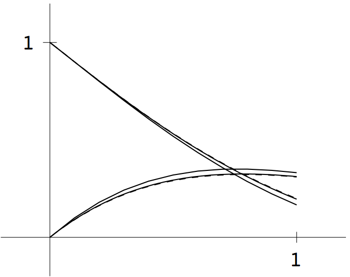
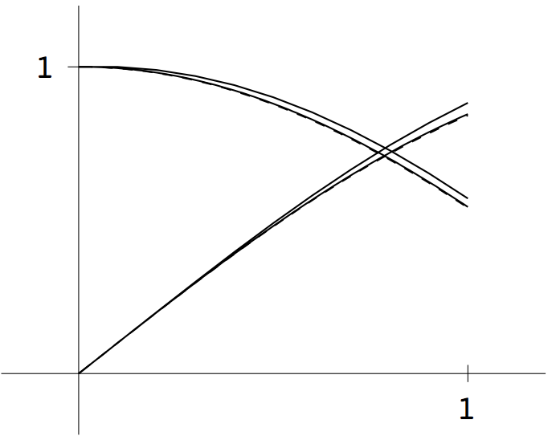
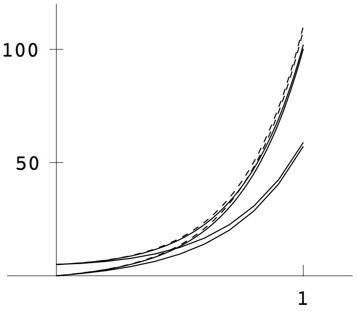

1 (b) Similar to (a). The global truncation errors are \([0.0328, 0.0219]\) for step size \(h=0.1\), and \([0.0031, 0.0020]\) for \(h=0.01\).

1 (c) Similar to (a). The global truncation errors are \([0.0305, 0.0410]\) for step size \(h=0.1\), and \([0.0027, 0.0042]\) for \(h=0.01\).

1 (d) Similar to (a). The global truncation errors are \([51.4030, 51.3070]\) for step size \(h=0.1\), and \([8.1919, 8.1827]\) for \(h=0.01\).

import numpy as np
import matplotlib.pyplot as plt
def orbit(inter, ic, n, p):
"""
Input: inter time interval
ic initial conditions [x0,vx0,y0,vy0]
n number of steps
p step per plotted point
Output: t time points
traj orbital trajectory
"""
h = (inter[1] - inter[0]) / n # Step size
x00, vx00, y00, vy00,x10,vx10,y10,vy10 = ic # Initial conditions
traj = np.zeros((n+1, 8)) # Initialize position and velocity array
y = np.zeros((p+1, 8))
y[0, :] = [x00, vx00, y00, vy00,x10, vx10, y10, vy10]
t = np.zeros((n+1)) # Time array
t[0] = inter[0]
plt.figure()
plt.xlim(-5, 5)
plt.ylim(-5, 5)
#plt.plot(0, 0, 'yo', markersize=16) # Draw sun at origin
# Prepare line objects for head and tail of the orbit
head1, = plt.plot([], [], 'ro', markersize=8)
tail1, = plt.plot([], [], 'b-', linestyle='-', markersize=4)
head2, = plt.plot([], [], 'yo', markersize=8)
tail2, = plt.plot([], [], 'b-', linestyle='-', markersize=4)
plt.ion() # Enable interactive mode for real-time plotting
for k in range(n // p):
for i in range(p):
t[k*p+i+1] = t[k*p+i] + h
y[i + 1, :] = trapstep(ydot, t[i], y[i, :], h)
traj[k*p+1:(k+1)*p+1,:] = y[1:,:]
# Update the position for the next frame
set_position(head1, y[p, 0], y[p, 2]) # Update head position
set_position(tail1, traj[1:(k+1)*p+1, 0], traj[1:(k+1)*p+1, 2])
set_position(head2, y[p, 4], y[p, 6]) # Update head position
set_position(tail2, traj[1:(k+1)*p+1, 4], traj[1:(k+1)*p+1, 6])
y[0, :] = y[p, :] # Update last computed position
plt.draw()
plt.pause(0.01) # Pause to visualize updates
plt.ioff() # Disable interactive mode
plt.show() # Show the plot window
return t, traj
def eulerstep(ydot, t, x, h): return x + h*ydot(t, x)
def trapstep(ydot, t, y, h): return y + h/2.*(ydot(t, y)+ydot(t+h,y+h*ydot(t,y)))
def ydot(t, x):
m0 = 0.03
m1 = 0.3 # Mass of the second object
g = 1 # Gravitational acceleration
mg0,mg1 = m0*g,m1*g
px0,vx0,py0,vy0,px1,vx1,py1,vy1 = x[0],x[1],x[2],x[3],x[4],x[5],x[6],x[7] # Unpack values
dist = np.sqrt((px1 - px0)**2 + (py1 - py0)**2)
z = np.zeros(8)
z[0] = vx0
z[1] = (mg1*(px1 - px0))/(dist**3) # Acceleration in x
z[2] = vy0
z[3] = (mg1*(py1 - py0))/(dist**3) # Acceleration in y
z[4] = vx1
z[5] = (mg0*(px0 - px1))/(dist**3) # Acceleration in x
z[6] = vy1
z[7] = (mg0*(py0 - py1))/(dist**3) # Acceleration in y
return z
def set_position(line, xdata, ydata):
line.set_data(xdata, ydata) # Function to set the position of plot points
# Example usage
orbit([0, 100], [2,0.2,2,-0.2,0,-0.02,0,0.02], 10000, 5)
orbit([0, 100], [0,0.2,1,-0.2,-2,-0.2,-1,0.2], 10000, 5)
along with the given masses. The orbits have some near passes, at which extra precision is needed to preserve accuracy.